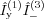

Matrix representations of spin operators.
S = sop(SpinSystem,Comps) [S1,S2,...] = sop(SpinSystem,Comps1,Comps2,...) ... = sop(...,'sparse');
sop
returns the matrix representation of spin operators.
The representation is in the product basis
|mI1,mI2,mI3,..>.
with the basis functions in descending mI order, left to right.
E.g. for a system with one electron-1/2 and one nucleus with spin 1
the states are in the following order: |1/2,+1>, |1/2,0>, |1/2,-1>,
|-1/2,+1>, |-1/2,0>, |-1/2,-1>.
SpinSystem is a vector containing the spin
quantum numbers or, alternatively, a spin system structure. Comps is a string specifying one
operator component for each spin in SpinSystem.
Elements of Comps can be 'e' (identity),
'x' (Ix), 'y'
(Iy), 'z' (Iz),
'+' (I+) or '-' (I-).
The order in Comps corresponds to the order in
SpinSystem.
E.g. for a 3-spin system Comps = 'ye-' yields
.
More than one component string can be specified, in which case sop
computes all operators at once. Of course, there must be a corresponding number of
output arguments.
If 'sparse' is given as last argument, spin operator
matrices are returned in sparse instead of full form.
Splus = sop(1/2,'+')
Splus =
0 1
0 0
SzIx = sop([1/2 1/2],'zx')
SzIx =
0 0.2500 0 0
0.2500 0 0 0
0 0 0 -0.2500
0 0 -0.2500 0
To compute multiple operators with one call, use for example
[Sx,Sy,Sz] = sop(1,'x','y','z');
Sx =
0 0.7071 0
0.7071 0 0.7071
0 0.7071 0
Sy =
0 0 - 0.7071i 0
0 + 0.7071i 0 0 - 0.7071i
0 0 + 0.7071i 0
Sz =
1 0 0
0 0 0
0 0 -1
Instead of the spin quantum numbers, a spin system structure can be provided.
System.S = 1; System.g = 2; System.D = [1000 0]; sop(System,'-')
ans =
0 0 0
1.4142 0 0
0 1.4142 0
spin operators, spin system, spinvec, stev